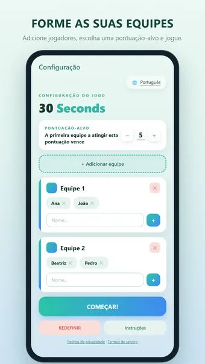
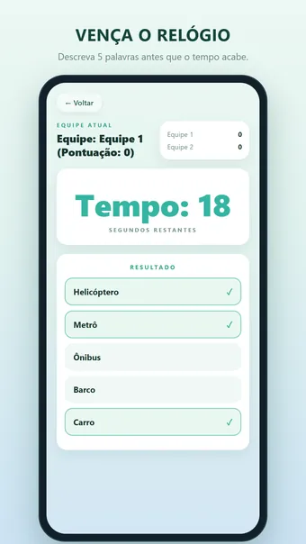
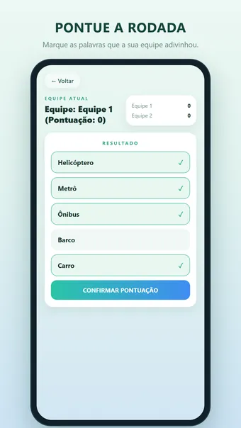
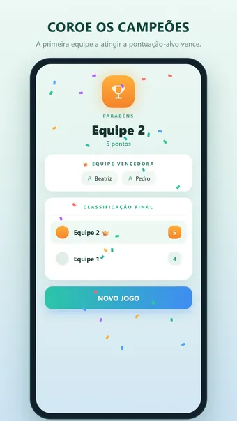

Sobre 30 Seconds
Joga 30 Seconds, o divertidíssimo jogo de festa de adivinhar palavras que transforma qualquer convívio numa competição animada. Junta os amigos, a família ou os colegas, formem as equipas e preparem-se para rir, gritar e vencer o relógio.
Como funciona
Um jogador recebe 5 palavras secretas e apenas 30 segundos para as descrever à sua equipa — sem dizer a própria palavra nem uma tradução. Cada palavra que a equipa adivinha vale um ponto. A primeira equipa a atingir a pontuação-alvo ganha!
Porque vais adorar
- Fácil de aprender, impossível de largar
- Perfeito para festas, viagens, serões em família e para quebrar o gelo
- Ótimo de 4 a mais de 20 jogadores
- As rondas duram só 30 segundos — sem esperas
- Uma enorme biblioteca de palavras integrada, baralhada a cada ronda
Joga à tua maneira
- Equipas ilimitadas — adiciona as que quiseres
- Pontuação-alvo personalizável: um jogo rápido até 15 ou uma batalha épica até 50
- Interface limpa e moderna com um suave design em tons de menta
- Instruções integradas para aprender em segundos
9 idiomas incluídos
- Neerlandês, inglês, alemão, francês, espanhol, português, italiano, polaco e turco
- Cada idioma tem a sua própria lista com milhares de palavras — não são traduções de uma só lista
- Toda a interface também está traduzida
- Muda de idioma diretamente no ecrã de configuração, para que um grupo misto jogue no idioma que preferir
- Adiciona as tuas próprias palavras em cada idioma
Dicas
- Usa sinónimos, descrições e exemplos — nunca a própria palavra
- Salta uma palavra difícil e avança; a rapidez vale mais que a perfeição
- Troca quem descreve a cada ronda para que todos joguem
Grátis para jogar. O app mostra anúncios, que você pode remover com uma compra opcional; não é preciso criar conta.
Perguntas frequentes
30 Seconds é grátis?
Sim. 30 Seconds é grátis para baixar e jogar. O app mostra anúncios, que você pode remover com uma compra opcional no app.
30 Seconds funciona offline?
Sim. 30 Seconds funciona sem conexão com a internet, então dá para jogar no avião, no ônibus ou em qualquer lugar sem Wi-Fi.
Preciso de uma conta para jogar 30 Seconds?
Não. Não é preciso se cadastrar nem fazer login: abra o app e jogue. Suas partidas e configurações ficam no seu próprio aparelho.
Como se joga 30 Seconds?
Um jogador recebe 5 palavras secretas e apenas 30 segundos para as descrever à sua equipa — sem dizer a própria palavra nem uma tradução. Cada palavra que a equipa adivinha vale um ponto. A primeira equipa a atingir a pontuação-alvo ganha!
Onde posso baixar 30 Seconds?
30 Seconds está disponível para celulares e tablets Android no Google Play. Use o botão no topo desta página.
Outros jogos de que você pode gostar
Word Connect
Conecte letras e forme palavras. Desafios infinitos e um novo desafio por dia.
Google PlayCopas
O clássico jogo de cartas. Jogue offline contra adversários espertos.
Google PlayCaça-Palavras
O clássico caça-palavras. Puzzles infinitos e um novo desafio diário.
Google PlayInformações legais
Abaixo estão os documentos legais que se aplicam a 30 Seconds.
Contato
Dúvidas, sugestões ou um pedido de privacidade? Escreva para joostmuijsenberg.dev@gmail.com.